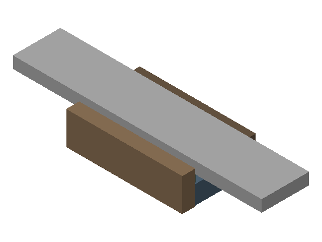

Header / route
✗ drill chuck r8 (missing): not listed in the inventory.
✗ 6.5-H7 reamers metric (missing): not listed in the inventory.
✗ rocker profile fixture (missing): not listed in the inventory.
? rocker-arm: cutting claims are unknown, unmapped or undecided, or as-stock refs are unknown.
? PM-30MV, blocks 123, caliper, #2 center drill, dial indicator, #47 drill index, 1/4 in drill index, dial test indicator, 0.2 in edge finder, 0-1 in micrometer, 1/2 in parallels, vise: listed; presence or catalogue identity needs verification.
? Drawing revision is not confirmed.
Drawing material / finish: spec: LOW-CARBON STEEL OR GRAY IRON; name: LOW-CARBON STEEL OR GRAY IRON; finish: matte black oxide; thickness: ?
form: rectangular blank; material: 1018 low-carbon steel; drawing material: LOW-CARBON STEEL OR GRAY IRON; note: Author's prepared blank: model X -155..155, Y -8..37, Z -8..8 (16 mm centred on model Z0). No stock on hand or measured surface is asserted. Retain rectangular rails and end ears through S1/S2; leave a 0.40 mm connecting web between opposed rough-profile depths. Integral hub from the bar: no brazed boss, loose bushing, rod tap or counterbore.; length mm: 310.00; section mm: 45.00 / 16.00; origin mm: -155.00 / -8.00 / -8.00; axis: 1.00 / 0.00 / 0.00; section axis: 0.00 / 1.00 / 0.00
| setup | starts from | machine / fixture |
|---|---|---|
| S1 | stock | PM-30MV / vise |
| S2 | S1 | PM-30MV / vise |
| S3 | S2 | PM-30MV / rocker profile fixture (missing) |
| feature | requirement / acceptance band |
|---|---|
| pivot bore | dia 6.50 / 6.53; finish ra 1.6 |
| rod hole | dia 1.99 / 2.09; position dia 0.20 |
| hub od | coaxiality dia 0.50; dia 9.69 / 10.71 |
| hub faces | length 7.056 / 7.106 |
| strap faces | thickness 1.99 / 3.01 |
| top edge | arc len 291.59 / 292.61; height above pivot 8.00 / 8.50; radius 799.49 / 800.51 |
| profile outer | bottom arc len 266.19 / 267.21; bottom radius 815.49 / 816.51 |
| strap datum b | thickness 1.99 / 3.01 |
| tip land pos x | land angle deg ?; tip land 5.08 / 6.10 |
| tip land neg x | land angle deg ?; tip land 5.08 / 6.10 |
Kernel geometry findings use sampled tool / holder solids, not CAM toolpaths. An unresolved fixture is not a rendered holding proof. ? = unresolved. EM = endmill; CD = centre drill; DTI = test indicator; mic = micrometer. Keep the drawing at the bench.
Sign off: __________ First article / measured results: ____________________
prechips 0.1 · report 54049767
? op 10, op 20, op 25, op 30, op 40, op 50, op 60, op 70: selected tool/holder dimensions are unmeasured or unavailable.
? S1: spindle envelope remains unmeasured or unresolved. measure: blocks 123 record height, steel rule or caliper, mm; measure: 1/2 in parallels record height, steel rule or caliper, mm; resolve: add or select an owned holder for drill chuck r8 (missing) in inventory and author plan.setups.S1.ops.70.holder; measure: R8 3/8 in collet spindle nose to mounted holder exit face, steel rule or height gauge, mm; measure: R8 3/8 in collet installed tool insertion from holder exit face, steel rule or caliper, mm; measure: PM-30MV spindle nose to table at full Z-up, steel rule or height gauge, mm; measure: PM-30MV spindle nose to table at full Z-down, steel rule or height gauge, mm; author: Author plan.setups.S1.ops.10.approach mm >= 0 in mm above the current stock top from the intended safe Z approach; no approach is assumed; author: Author plan.setups.S1.ops.20.approach mm >= 0 in mm above the current stock top from the intended safe Z approach; no approach is assumed; author: Author plan.setups.S1.ops.25.approach mm >= 0 in mm above the current stock top from the intended safe Z approach; no approach is assumed; author: Author plan.setups.S1.ops.30.approach mm >= 0 in mm above the current stock top from the intended safe Z approach; no approach is assumed; author: Author plan.setups.S1.ops.40.approach mm >= 0 in mm above the current stock top from the intended safe Z approach; no approach is assumed; author: Author plan.setups.S1.ops.50.approach mm >= 0 in mm above the current stock top from the intended safe Z approach; no approach is assumed; author: Author plan.setups.S1.ops.60.approach mm >= 0 in mm above the current stock top from the intended safe Z approach; no approach is assumed; author: Author plan.setups.S1.ops.70.approach mm >= 0 in mm above the current stock top from the intended safe Z approach; no approach is assumed; Measure plan.setups.S1.ops.70 hole entry and local thickness/depth with a depth gauge, drill point or reamer lead with an optical comparator, and exit allowance in mm; record stock state.entry z/local thickness and operation depth mm/exit mm; measure: 1/4 in drill index selected cutter diameter, micrometer, mm; measure: 1/4 in drill index included drill point angle, protractor, degrees; measure: 3/8 in 2-flute endmill selected tool overall length, steel rule or caliper, mm; measure: 3/8 in 4-flute endmill selected tool overall length, steel rule or caliper, mm.
? S1: drawn fixture components only touch; unresolved: parallels not drawn: parallels width mm, parallels centres mm undeclared; riser blocks not drawn: blocks 123 length, blocks 123 width, blocks 123 height, riser up / riser along (two different block edges), riser centres mm undeclared; supports 'blocks 123' has no fixture solid model.
? op 60: selected tool/holder dimensions are unmeasured or unavailable.
? op 10, op 20, op 25, op 30, op 40, op 50, op 60, op 70: selected tool/holder dimensions are unmeasured or unavailable.
? S1: grip-zone wall thickness or shop thin-wall floor is unmeasured.
? S1: declared operation travel remains unmeasured or unresolved. Measure and declare plan.setups.S1.ops.20.rough allowance mm >= 0 with caliper or a micrometer in mm per side of the rough cut; Measure and declare plan.setups.S1.ops.30.rough allowance mm >= 0 with caliper or a micrometer in mm per side of the rough cut; Measure and declare plan.setups.S1.ops.40.rough allowance mm >= 0 with caliper or a micrometer in mm per side of the rough cut; Measure and declare plan.setups.S1.ops.50.rough allowance mm >= 0 with caliper or a micrometer in mm per side of the rough cut; resolve: add or select an owned holder for drill chuck r8 (missing) in inventory and author plan.setups.S1.ops.70.holder; measure: R8 3/8 in collet spindle nose to mounted holder exit face, steel rule or height gauge, mm; measure: R8 3/8 in collet installed tool insertion from holder exit face, steel rule or caliper, mm; measure: PM-30MV X safe usable travel, stop-to-stop, steel rule or caliper, mm; measure: PM-30MV Y safe usable travel, stop-to-stop, steel rule or caliper, mm; measure: PM-30MV Z safe usable travel, stop-to-stop, steel rule or caliper, mm; author: Author plan.setups.S1.ops.10.approach mm >= 0 in mm above the current stock top from the intended safe Z approach; no approach is assumed; author: Measure plan.setups.S1.ops.20 full feature.bounds x/y/z or point-operation feature.at in its declared frame with caliper, a height gauge or CMM, in mm; for a broad cut record plan.stock.length mm and section mm/dia mm with caliper instead of using a nominal feature width; author: Author plan.setups.S1.ops.20.approach mm >= 0 in mm above the current stock top from the intended safe Z approach; no approach is assumed; author: Author plan.setups.S1.ops.25.approach mm >= 0 in mm above the current stock top from the intended safe Z approach; no approach is assumed; author: Measure plan.setups.S1.ops.30 full feature.bounds x/y/z or point-operation feature.at in its declared frame with caliper, a height gauge or CMM, in mm; for a broad cut record plan.stock.length mm and section mm/dia mm with caliper instead of using a nominal feature width; author: Author plan.setups.S1.ops.30.approach mm >= 0 in mm above the current stock top from the intended safe Z approach; no approach is assumed; author: Measure plan.setups.S1.ops.40 full feature.bounds x/y/z or point-operation feature.at in its declared frame with caliper, a height gauge or CMM, in mm; for a broad cut record plan.stock.length mm and section mm/dia mm with caliper instead of using a nominal feature width; author: Author plan.setups.S1.ops.40.approach mm >= 0 in mm above the current stock top from the intended safe Z approach; no approach is assumed; author: Measure plan.setups.S1.ops.50 full feature.bounds x/y/z or point-operation feature.at in its declared frame with caliper, a height gauge or CMM, in mm; for a broad cut record plan.stock.length mm and section mm/dia mm with caliper instead of using a nominal feature width; author: Author plan.setups.S1.ops.50.approach mm >= 0 in mm above the current stock top from the intended safe Z approach; no approach is assumed; author: Author plan.setups.S1.ops.60.approach mm >= 0 in mm above the current stock top from the intended safe Z approach; no approach is assumed; author: Author plan.setups.S1.ops.70.approach mm >= 0 in mm above the current stock top from the intended safe Z approach; no approach is assumed; Measure plan.setups.S1.ops.70 hole entry and local thickness/depth with a depth gauge, drill point or reamer lead with an optical comparator, and exit allowance in mm; record stock state.entry z/local thickness and operation depth mm/exit mm; measure: 1/4 in drill index selected cutter diameter, micrometer, mm; measure: 1/4 in drill index included drill point angle, protractor, degrees; measure: 3/8 in 2-flute endmill selected cutter diameter, micrometer, mm; measure: 3/8 in 2-flute endmill selected tool overall length, steel rule or caliper, mm; measure: 3/8 in 4-flute endmill selected tool overall length, steel rule or caliper, mm.
? Geometry unresolved: hole entry / tip; coordinates / frame binding; datum transfer; headroom / clearance. Close ? checks below.
? Tooling unresolved: finishing size (pivot bore); RPM / feed; tool / holder / shank fit (all cutting ops). Close ? checks below.
? DRO / inspection unresolved: DRO / tool / trial-cut checks. Close ? checks below.
Starts from: stock; stock state: top feature: hub faces; top z: 4.47; bottom z: -11.53; local thickness: pivot bore: 11.53
Hold: fixture: vise; jaws along: x; fixed jaw: rear; parallels: 1/2 in parallels; support orientation: 1 in height; grip on: full-thickness rectangular rails; stop: left blank end against fixed-jaw stop; clamp: hand snug, then quarter turn; confirm seating and rail engagement; note: Grip the rails on the 1-2-3 blocks plus 1/2 in parallels; never rest the thinned strap on an unsupported island.; grip mm: 6.00; jaw above supports mm: 6.85; jaw center along mm: 0.00; supports: blocks 123

Coolant: cutting oil brush; deburr maximum: 0.25 mm
Headroom / clearance — nominal, subject to verification. Stack (mm): bed 73.30; blocks 25.40; parallels 12.70; supported stock 16.00; insertion 25.00; required ? / spindle capacity 431.80. Tools: projection ?, OAL ?, holder length ?, headroom ? mm. Jaw top Z -4.68; stock top 9.15 mm above jaws. Tip above jaws (mm): ops 10: 4.68; ops 20, 30: 2.60; ops 25: 2.40; ops 40, 50: 1.35. Cutter access unproved. Envelope (mm): X stock 310.00, fixture ?, required ? / travel 584.20; Y stock 45.00, fixture ?, required ? / travel 222.25.
Upper side: qualify the upper hub face (frame A Z0), finish the upper strap face, rough the hub, top edge and outer profile, spot and drill the pivot pilot. Keep the rails and ears continuous. Contour tables are nominal boundary offsets: interrupt at clamped rails/ears, preserve the 0.40 mm web, and confirm actual cutter access before using any checkpoint.
Direction (§6.2): x: right; y: away; z: up. ABS Axis Set (§7.4), never Preset (§8.1). Jog without retouch; mirrored = STOP, correct Direction and redo touch / set / check.
| axis | touch / compensation | Axis Set | jog, no touch | must read | mirrored: STOP |
|---|---|---|---|---|---|
| X | blank left end; 0.2 in edge finder; R8 3/8 in collet; from -X; surface -155.00; radius 2.54 | -157.54 | +X 10.00 physical | -147.54 | -167.54 |
| Y | blank front edge; 0.2 in edge finder; R8 3/8 in collet; from -Y; surface -16.00; radius 2.54 | -18.54 | +Y 10.00 physical | -8.54 | -28.54 |
| Z | top; 3/8 in 4fl EM; surface 4.472; paper 0.05 | 4.522 | +Z 10.00 physical | 14.522 | -5.478 |
After 10, 20, 25, 50, 60, re-touch hub faces Z 0.000 with 0.05 paper → Axis Set Z 0.050 before each changed tool.
| feature | X | Y | Z / station | note |
|---|---|---|---|---|
| hub od | 0.00 | 0.00 | -3.53 | — |
| pivot bore | 0.00 | 0.00 | -3.53 | — |
Feature points, not cutting tips; use Z tips in operations. → = towards. Cutter-centre tables / exact joins follow. Measured binding: ?.
| op | do | feature | tool / holder | rpm | feed | Z tip | dir | inspection |
|---|---|---|---|---|---|---|---|---|
| 10 | face | hub faces | 3/8 in 4fl EM / R8 3/8 in collet | ? | ? | → 0 | conv | — |
| 20 | rough face stock left 0.20 | strap datum b | 3/8 in 2fl EM / R8 3/8 in collet | ? | ? | → -2.07825 | conv | — |
| 25 | finish face | strap datum b | 3/8 in 4fl EM / R8 3/8 in collet | ? | ? | → -2.27825 | conv | — |
| 30 | rough profile stock left 0.20 | hub od | 3/8 in 2fl EM / R8 3/8 in collet | ? | ? | → -2.07825 | conv | — |
| 40 | rough profile stock left 0.20 | top edge | 3/8 in 2fl EM / R8 3/8 in collet | ? | ? | → -3.32825 | conv | — |
| 50 | rough profile stock left 0.20 | profile outer | 3/8 in 2fl EM / R8 3/8 in collet | ? | ? | → -3.32825 | conv | — |
| 60 | spot | pivot bore | #2 CD / drill chuck r8 ✗ | ? | ? | entry 0 → tip -0.5 depth 0.5 | — | — |
| 70 | drill | pivot bore | 1/4 in drill / drill chuck r8 ✗ | ? | ? | entry 0 → tip ? exit face -11.5282 − point ? − exit 2 | — | — |
20: Around the hub island, keeping the rails. 30: Upper hub island about the pivot axis; finished in S3 with the bore. 40: R800 top edge; leave the rails and ears connected. 50: Bottom arc, radial lands and tapered ends; rails and ears stay continuous. The 5.59 lands are profile lines, not chamfers. 70: Pilot for the S3 ream and the S2/S3 pickups. Drill size kept from the earlier plan; the ream allowance it leaves is not confirmed.
RPM / feed source: approved plan starting-speed model; machine range; cutting-data source row
Sign off: __________ First article / measured results: ____________________
prechips 0.1 · report 54049767
Setup S1 contour continuation
Frame A, mm. Cutter-centre X/Y for mills; displayed X/Z profile for lathes, subject to the stated tool-nose compensation.
Nominal checkpoints do not prove cutter access or workholding. Follow the setup's hold / release instructions.
Op 30 — hub od
method: arc table; step deg: 10; centre setup xy: 0 / 0; cutter centre radius mm: 10.0625; radius mm: 10.0625; tip z: -2.07825; interpolation: continuous circle; checkpoints are not straight-chord cuts; basis: nominal selected cutter size; measured geometry and frame binding govern readiness; max chord sagitta mm: 0.038291; stage: rough; allowance mm: 0.2; offset mm: 4.9625; full computed arc range: 0 → 360°; Equivalent X / Y reflections omitted. Mirror the listed coordinates about centre X 0, Y 0; not about a guessed datum. Keep the operation's cut direction and stated interpolation.
| angle ° | X | Y | Z tip |
|---|---|---|---|
| 0 | 10.0625 | 0 | -2.07825 |
| 10 | 9.90963 | 1.74734 | -2.07825 |
| 20 | 9.45566 | 3.44158 | -2.07825 |
| 30 | 8.71438 | 5.03125 | -2.07825 |
| 40 | 7.70832 | 6.46805 | -2.07825 |
| 50 | 6.46805 | 7.70832 | -2.07825 |
| 60 | 5.03125 | 8.71438 | -2.07825 |
| 70 | 3.44158 | 9.45566 | -2.07825 |
| 80 | 1.74734 | 9.90963 | -2.07825 |
| 90 | 0 | 10.0625 | -2.07825 |
| 360 | 10.0625 | 0 | -2.07825 |
Op 40 — top edge
method: arc table; step deg: 1; centre setup xy: 0 / 808; cutter centre radius mm: 795.038; radius mm: 795.038; tip z: -3.32825; interpolation: straight chords at authored step, exact offset joins included; basis: nominal selected cutter size; measured geometry and frame binding govern readiness; max chord sagitta mm: 0.030273; stage: rough; allowance mm: 0.2; offset mm: 4.9625; full computed arc range: -10.8177 → 10.8177°; Equivalent X reflections omitted. Mirror the listed coordinates about centre X 0, Y 808; not about a guessed datum. Keep the operation's cut direction and stated interpolation.
| angle ° | X | Y | Z tip |
|---|---|---|---|
| 0 | 0 | 12.9625 | -3.32825 |
| 1 | 13.8753 | 13.0836 | -3.32825 |
| 2 | 27.7464 | 13.4468 | -3.32825 |
| 3 | 41.609 | 14.0521 | -3.32825 |
| 4 | 55.459 | 14.8992 | -3.32825 |
| 5 | 69.2921 | 15.9879 | -3.32825 |
| 6 | 83.104 | 17.3178 | -3.32825 |
| 7 | 96.8907 | 18.8886 | -3.32825 |
| 8 | 110.648 | 20.6998 | -3.32825 |
| 9 | 124.371 | 22.7507 | -3.32825 |
| 10 | 138.057 | 25.0409 | -3.32825 |
| 10.8177 | 149.216 | 27.0908 | -3.32825 |
Sign off: __________ First article / measured results: ____________________
prechips 0.1 · report 54049767
Setup S1 contour continuation
Frame A, mm. Cutter-centre X/Y for mills; displayed X/Z profile for lathes, subject to the stated tool-nose compensation.
Nominal checkpoints do not prove cutter access or workholding. Follow the setup's hold / release instructions.
Op 50 — profile outer
method: arc table; step deg: 1; centre setup xy: 0 / 808; cutter centre radius mm: 820.962; radius mm: 820.962; tip z: -3.32825; interpolation: straight chords at authored step, exact offset joins included; basis: nominal selected cutter size; measured geometry and frame binding govern readiness; max chord sagitta mm: 0.03126; stage: rough; allowance mm: 0.2; offset mm: 4.9625; full computed arc range: -9.47059 → 9.47059°; Equivalent X reflections omitted. Mirror the listed coordinates about centre X 0, Y 808; not about a guessed datum. Keep the operation's cut direction and stated interpolation.
| angle ° | X | Y | Z tip |
|---|---|---|---|
| 0 | 0 | -12.9625 | -3.32825 |
| 1 | 14.3278 | -12.8375 | -3.32825 |
| 2 | 28.6512 | -12.4624 | -3.32825 |
| 3 | 42.9659 | -11.8374 | -3.32825 |
| 4 | 57.2674 | -10.9627 | -3.32825 |
| 5 | 71.5516 | -9.83849 | -3.32825 |
| 6 | 85.8139 | -8.46518 | -3.32825 |
| 7 | 100.05 | -6.84317 | -3.32825 |
| 8 | 114.256 | -4.97295 | -3.32825 |
| 9 | 128.427 | -2.85509 | -3.32825 |
| 9.47059 | 135.082 | -1.77294 | -3.32825 |
Op 50 — exact line joins
op: 50; feature: profile outer; side: -X; offset mm: 4.9625; tip z: -3.32825; join method: line-line miter and exact line-circle intersections; stage: rough
| join order | X | Y | Z tip |
|---|---|---|---|
| 1 | -149.216 | 27.0908 | -3.32825 |
| 2 | -151.621 | 14.0676 | -3.32825 |
| 3 | -135.082 | -1.77294 | -3.32825 |
Op 50 — exact line joins
op: 50; feature: profile outer; side: +X; offset mm: 4.9625; tip z: -3.32825; join method: line-line miter and exact line-circle intersections; stage: rough
| join order | X | Y | Z tip |
|---|---|---|---|
| 1 | 149.216 | 27.0908 | -3.32825 |
| 2 | 151.621 | 14.0676 | -3.32825 |
| 3 | 135.082 | -1.77294 | -3.32825 |
Sign off: __________ First article / measured results: ____________________
prechips 0.1 · report 54049767
? op 10, op 20, op 30, op 40, op 50: in-process stock unknown: S1:40: overstock still touches claimed wall(s) #503/ADVANCED FACE[14]/HAF TOP EDGE P01 above its to z; the setup approach does not fully clear this profile wall and the op declares no stock removal bounds (cleared XY footprint, retained rail/ear volume of an interrupted profile) for it; the in-process stock setup S1 leaves cannot be derived.
? S2: spindle envelope remains unmeasured or unresolved. measure: blocks 123 record height, steel rule or caliper, mm; measure: 1/2 in parallels record height, steel rule or caliper, mm; measure: R8 3/8 in collet spindle nose to mounted holder exit face, steel rule or height gauge, mm; measure: R8 3/8 in collet installed tool insertion from holder exit face, steel rule or caliper, mm; measure: PM-30MV spindle nose to table at full Z-up, steel rule or height gauge, mm; measure: PM-30MV spindle nose to table at full Z-down, steel rule or height gauge, mm; author: Author plan.setups.S2.ops.10.approach mm >= 0 in mm above the current stock top from the intended safe Z approach; no approach is assumed; author: Author plan.setups.S2.ops.20.approach mm >= 0 in mm above the current stock top from the intended safe Z approach; no approach is assumed; author: Author plan.setups.S2.ops.30.approach mm >= 0 in mm above the current stock top from the intended safe Z approach; no approach is assumed; author: Author plan.setups.S2.ops.40.approach mm >= 0 in mm above the current stock top from the intended safe Z approach; no approach is assumed; author: Author plan.setups.S2.ops.50.approach mm >= 0 in mm above the current stock top from the intended safe Z approach; no approach is assumed; measure: 3/8 in 2-flute endmill selected tool overall length, steel rule or caliper, mm; measure: 3/8 in 4-flute endmill selected tool overall length, steel rule or caliper, mm.
? S2: in-process stock unknown: S1:40: overstock still touches claimed wall(s) #503/ADVANCED FACE[14]/HAF TOP EDGE P01 above its to z; the setup approach does not fully clear this profile wall and the op declares no stock removal bounds (cleared XY footprint, retained rail/ear volume of an interrupted profile) for it; the in-process stock setup S1 leaves cannot be derived.
? op 10, op 20, op 30, op 40, op 50: in-process stock unknown: S1:40: overstock still touches claimed wall(s) #503/ADVANCED FACE[14]/HAF TOP EDGE P01 above its to z; the setup approach does not fully clear this profile wall and the op declares no stock removal bounds (cleared XY footprint, retained rail/ear volume of an interrupted profile) for it; the in-process stock setup S1 leaves cannot be derived.
? S2: in-process stock unknown: S1:40: overstock still touches claimed wall(s) #503/ADVANCED FACE[14]/HAF TOP EDGE P01 above its to z; the setup approach does not fully clear this profile wall and the op declares no stock removal bounds (cleared XY footprint, retained rail/ear volume of an interrupted profile) for it; the in-process stock setup S1 leaves cannot be derived.
? S2: declared operation travel remains unmeasured or unresolved. Measure and declare plan.setups.S2.ops.40.rough allowance mm >= 0 with caliper or a micrometer in mm per side of the rough cut; Measure and declare plan.setups.S2.ops.50.rough allowance mm >= 0 with caliper or a micrometer in mm per side of the rough cut; measure: R8 3/8 in collet spindle nose to mounted holder exit face, steel rule or height gauge, mm; measure: R8 3/8 in collet installed tool insertion from holder exit face, steel rule or caliper, mm; measure: PM-30MV X safe usable travel, stop-to-stop, steel rule or caliper, mm; measure: PM-30MV Y safe usable travel, stop-to-stop, steel rule or caliper, mm; measure: PM-30MV Z safe usable travel, stop-to-stop, steel rule or caliper, mm; author: Author plan.setups.S2.ops.10.approach mm >= 0 in mm above the current stock top from the intended safe Z approach; no approach is assumed; author: Author plan.setups.S2.ops.20.approach mm >= 0 in mm above the current stock top from the intended safe Z approach; no approach is assumed; author: Measure plan.setups.S2.ops.30 full feature.bounds x/y/z or point-operation feature.at in its declared frame with caliper, a height gauge or CMM, in mm; for a broad cut record plan.stock.length mm and section mm/dia mm with caliper instead of using a nominal feature width; author: Author plan.setups.S2.ops.30.approach mm >= 0 in mm above the current stock top from the intended safe Z approach; no approach is assumed; author: Measure plan.setups.S2.ops.40 full feature.bounds x/y/z or point-operation feature.at in its declared frame with caliper, a height gauge or CMM, in mm; for a broad cut record plan.stock.length mm and section mm/dia mm with caliper instead of using a nominal feature width; author: Author plan.setups.S2.ops.40.approach mm >= 0 in mm above the current stock top from the intended safe Z approach; no approach is assumed; author: Measure plan.setups.S2.ops.50 full feature.bounds x/y/z or point-operation feature.at in its declared frame with caliper, a height gauge or CMM, in mm; for a broad cut record plan.stock.length mm and section mm/dia mm with caliper instead of using a nominal feature width; author: Author plan.setups.S2.ops.50.approach mm >= 0 in mm above the current stock top from the intended safe Z approach; no approach is assumed; measure: 3/8 in 2-flute endmill selected cutter diameter, micrometer, mm; measure: 3/8 in 2-flute endmill selected tool overall length, steel rule or caliper, mm; measure: 3/8 in 4-flute endmill selected cutter diameter, micrometer, mm; measure: 3/8 in 4-flute endmill selected tool overall length, steel rule or caliper, mm.
? S2: in-process stock unknown: S1:40: overstock still touches claimed wall(s) #503/ADVANCED FACE[14]/HAF TOP EDGE P01 above its to z; the setup approach does not fully clear this profile wall and the op declares no stock removal bounds (cleared XY footprint, retained rail/ear volume of an interrupted profile) for it; the in-process stock setup S1 leaves cannot be derived.
? Geometry unresolved: coordinates / frame binding; datum transfer; headroom / clearance. Close ? checks below.
? DRO / inspection unresolved: inspection limits / methods / gauges; DRO / tool / trial-cut checks. Close ? checks below.
? Tooling unresolved: RPM / feed; tool / holder / shank fit (all cutting ops). Close ? checks below.
Starts from: S1; stock state: top feature: hub faces; top z: 4.47; bottom z: -7.06; retained rail bottom z: -11.53
Hold: fixture: vise; jaws along: x; fixed jaw: rear; parallels: 1/2 in parallels; support orientation: 1 in height; grip on: full-thickness rectangular rails and ears; stop: left blank end against fixed-jaw stop; indicate pilot to transfer datum; clamp: hand snug, then quarter turn; confirm seating and rail engagement; note: Seat the retained rails, not the thin strap or a hub rim.; grip mm: 6.00; jaw above supports mm: 6.85; jaw center along mm: 0.00; supports: blocks 123
? Kernel fixture render unavailable; holding geometry is not confirmed.
Coolant: cutting oil brush; deburr maximum: 0.25 mm
Headroom / clearance — nominal, subject to verification. Stack (mm): bed 73.30; blocks 25.40; parallels 12.70; supported stock 16.00; insertion 25.00; required ? / spindle capacity 431.80. Tools: projection ?, OAL ?, holder length ?, headroom ? mm. Jaw top Z -4.68; stock top 9.15 mm above jaws. Tip above jaws (mm): ops 10: 4.68; ops 20, 30: 2.40; ops 40, 50: 1.35. Cutter access unproved. Envelope (mm): X stock 310.00, fixture ?, required ? / travel 584.20; Y stock 45.00, fixture ?, required ? / travel 222.25.
Lower side, flipped about model X: qualify the lower hub face to the hub length, finish the lower strap face and lower hub OD, rough the lower side of the top edge and profile. Rails and ears stay on. Interrupt roughing at clamped rails/ears, retain the 0.40 mm web and verify access; nominal boundary checkpoints are not an approved full contour cut.
Direction (§6.2): x: right; y: away; z: up. ABS Axis Set (§7.4), never Preset (§8.1). Jog without retouch; mirrored = STOP, correct Direction and redo touch / set / check.
| axis | touch / compensation | Axis Set | jog, no touch | must read | mirrored: STOP |
|---|---|---|---|---|---|
| X | pivot bore axis; DTI ✗; from INDICATED | 0.00 | +X 10.00 physical | 10.00 | -10.00 |
| Y | pivot bore axis; DTI ✗; from INDICATED | 0.00 | +Y 10.00 physical | 10.00 | -10.00 |
| Z | top; 3/8 in 4fl EM; surface 4.472; paper 0.05 | 4.522 | +Z 10.00 physical | 14.522 | -5.478 |
Transfer from S1: indicate pivot bore with DTI
After 10, 30, re-touch hub faces Z 0.000 with 0.05 paper → Axis Set Z 0.050 before each changed tool.
| feature | X | Y | Z / station | note |
|---|---|---|---|---|
| hub od | 0.00 | 0.00 | -3.53 | — |
Feature points, not cutting tips; use Z tips in operations. → = towards. Cutter-centre tables / exact joins follow. Measured binding: ?.
| op | do | feature | tool / holder | rpm | feed | Z tip | dir | inspection |
|---|---|---|---|---|---|---|---|---|
| 10 | finish face | hub faces | 3/8 in 4fl EM / R8 3/8 in collet | ? | ? | → 0 | conv | ? length 7.056–7.106: 0-1 in mic |
| 20 | finish face | strap faces | 3/8 in 4fl EM / R8 3/8 in collet | ? | ? | → -2.27825 | conv | ? thickness 1.99–3.01: 0-1 in mic |
| 25 | inspect | strap datum b | — | — | — | — | — | ? thickness 1.99–3.01: 0-1 in mic |
| 30 | finish profile | hub od | 3/8 in 4fl EM / R8 3/8 in collet | ? | ? | → -2.27825 | conv | ? Ø 9.69–10.71: caliper ? coax Ø 0.50: indicator |
| 40 | rough profile stock left 0.20 | top edge | 3/8 in 2fl EM / R8 3/8 in collet | ? | ? | → -3.32825 | conv | — |
| 50 | rough profile stock left 0.20 | profile outer | 3/8 in 2fl EM / R8 3/8 in collet | ? | ? | → -3.32825 | conv | — |
25: Same strap-thickness micrometer check after both sides are finished; export names the upper datum face separately. 30: Lower hub OD about the transferred pilot axis.
RPM / feed source: approved plan starting-speed model; machine range; cutting-data source row; approved plan §4.1 speeds/feeds
Sign off: __________ First article / measured results: ____________________
prechips 0.1 · report 54049767
Setup S2 contour continuation
Frame B, mm. Cutter-centre X/Y for mills; displayed X/Z profile for lathes, subject to the stated tool-nose compensation.
Nominal checkpoints do not prove cutter access or workholding. Follow the setup's hold / release instructions.
Op 30 — hub od
method: arc table; step deg: 10; centre setup xy: 0 / 0; cutter centre radius mm: 9.8625; radius mm: 9.8625; tip z: -2.27825; interpolation: continuous circle; checkpoints are not straight-chord cuts; basis: nominal selected cutter size; measured geometry and frame binding govern readiness; max chord sagitta mm: 0.03753; stage: finish; allowance mm: 0; offset mm: 4.7625; full computed arc range: 0 → 360°; Equivalent X / Y reflections omitted. Mirror the listed coordinates about centre X 0, Y 0; not about a guessed datum. Keep the operation's cut direction and stated interpolation.
| angle ° | X | Y | Z tip |
|---|---|---|---|
| 0 | 9.8625 | 0 | -2.27825 |
| 270 | 0 | 9.8625 | -2.27825 |
| 280 | 1.7126 | 9.71267 | -2.27825 |
| 290 | 3.37317 | 9.26772 | -2.27825 |
| 300 | 4.93125 | 8.54118 | -2.27825 |
| 310 | 6.33949 | 7.55511 | -2.27825 |
| 320 | 7.55511 | 6.33949 | -2.27825 |
| 330 | 8.54118 | 4.93125 | -2.27825 |
| 340 | 9.26772 | 3.37317 | -2.27825 |
| 350 | 9.71267 | 1.7126 | -2.27825 |
| 360 | 9.8625 | 0 | -2.27825 |
Op 40 — top edge
method: arc table; step deg: 1; centre setup xy: 0 / -808; cutter centre radius mm: 795.038; radius mm: 795.038; tip z: -3.32825; interpolation: straight chords at authored step, exact offset joins included; basis: nominal selected cutter size; measured geometry and frame binding govern readiness; max chord sagitta mm: 0.030273; stage: rough; allowance mm: 0.2; offset mm: 4.9625; full computed arc range: -10.8177 → 10.8177°; Equivalent X reflections omitted. Mirror the listed coordinates about centre X 0, Y -808; not about a guessed datum. Keep the operation's cut direction and stated interpolation.
| angle ° | X | Y | Z tip |
|---|---|---|---|
| 0 | 0 | -12.9625 | -3.32825 |
| 1 | 13.8753 | -13.0836 | -3.32825 |
| 2 | 27.7464 | -13.4468 | -3.32825 |
| 3 | 41.609 | -14.0521 | -3.32825 |
| 4 | 55.459 | -14.8992 | -3.32825 |
| 5 | 69.2921 | -15.9879 | -3.32825 |
| 6 | 83.104 | -17.3178 | -3.32825 |
| 7 | 96.8907 | -18.8886 | -3.32825 |
| 8 | 110.648 | -20.6998 | -3.32825 |
| 9 | 124.371 | -22.7507 | -3.32825 |
| 10 | 138.057 | -25.0409 | -3.32825 |
| 10.8177 | 149.216 | -27.0908 | -3.32825 |
Sign off: __________ First article / measured results: ____________________
prechips 0.1 · report 54049767
Setup S2 contour continuation
Frame B, mm. Cutter-centre X/Y for mills; displayed X/Z profile for lathes, subject to the stated tool-nose compensation.
Nominal checkpoints do not prove cutter access or workholding. Follow the setup's hold / release instructions.
Op 50 — profile outer
method: arc table; step deg: 1; centre setup xy: 0 / -808; cutter centre radius mm: 820.962; radius mm: 820.962; tip z: -3.32825; interpolation: straight chords at authored step, exact offset joins included; basis: nominal selected cutter size; measured geometry and frame binding govern readiness; max chord sagitta mm: 0.03126; stage: rough; allowance mm: 0.2; offset mm: 4.9625; full computed arc range: -9.47059 → 9.47059°; Equivalent X reflections omitted. Mirror the listed coordinates about centre X 0, Y -808; not about a guessed datum. Keep the operation's cut direction and stated interpolation.
| angle ° | X | Y | Z tip |
|---|---|---|---|
| 0 | 0 | 12.9625 | -3.32825 |
| 1 | 14.3278 | 12.8375 | -3.32825 |
| 2 | 28.6512 | 12.4624 | -3.32825 |
| 3 | 42.9659 | 11.8374 | -3.32825 |
| 4 | 57.2674 | 10.9627 | -3.32825 |
| 5 | 71.5516 | 9.83849 | -3.32825 |
| 6 | 85.8139 | 8.46518 | -3.32825 |
| 7 | 100.05 | 6.84317 | -3.32825 |
| 8 | 114.256 | 4.97295 | -3.32825 |
| 9 | 128.427 | 2.85509 | -3.32825 |
| 9.47059 | 135.082 | 1.77294 | -3.32825 |
Op 50 — exact line joins
op: 50; feature: profile outer; side: -X; offset mm: 4.9625; tip z: -3.32825; join method: line-line miter and exact line-circle intersections; stage: rough
| join order | X | Y | Z tip |
|---|---|---|---|
| 1 | -149.216 | -27.0908 | -3.32825 |
| 2 | -151.621 | -14.0676 | -3.32825 |
| 3 | -135.082 | 1.77294 | -3.32825 |
Op 50 — exact line joins
op: 50; feature: profile outer; side: +X; offset mm: 4.9625; tip z: -3.32825; join method: line-line miter and exact line-circle intersections; stage: rough
| join order | X | Y | Z tip |
|---|---|---|---|
| 1 | 149.216 | -27.0908 | -3.32825 |
| 2 | 151.621 | -14.0676 | -3.32825 |
| 3 | 135.082 | 1.77294 | -3.32825 |
Sign off: __________ First article / measured results: ____________________
prechips 0.1 · report 54049767
? op 10, op 20, op 30, op 40, op 50, op 60: in-process stock unknown: S1:40: overstock still touches claimed wall(s) #503/ADVANCED FACE[14]/HAF TOP EDGE P01 above its to z; the setup approach does not fully clear this profile wall and the op declares no stock removal bounds (cleared XY footprint, retained rail/ear volume of an interrupted profile) for it; the in-process stock setup S1 leaves cannot be derived.
? S3: spindle envelope remains unmeasured or unresolved. resolve: add or select an owned fixture for rocker profile fixture (missing) in inventory and author plan.setups.S3.hold.fixture; resolve: add or select an owned fixture for unknown in inventory and author plan.setups.S3.hold.supports; resolve: add or select an owned holder for drill chuck r8 (missing) in inventory and author plan.setups.S3.ops.60.holder; measure: R8 3/8 in collet spindle nose to mounted holder exit face, steel rule or height gauge, mm; measure: R8 3/8 in collet installed tool insertion from holder exit face, steel rule or caliper, mm; measure: PM-30MV spindle nose to table at full Z-up, steel rule or height gauge, mm; measure: PM-30MV spindle nose to table at full Z-down, steel rule or height gauge, mm; author: Author plan.setups.S3.ops.10.approach mm >= 0 in mm above the current stock top from the intended safe Z approach; no approach is assumed; author: Author plan.setups.S3.ops.20.approach mm >= 0 in mm above the current stock top from the intended safe Z approach; no approach is assumed; Measure plan.setups.S3.ops.20 hole entry and local thickness/depth with a depth gauge, drill point or reamer lead with an optical comparator, and exit allowance in mm; record stock state.entry z/local thickness and operation depth mm/exit mm; author: Author plan.setups.S3.ops.30.approach mm >= 0 in mm above the current stock top from the intended safe Z approach; no approach is assumed; author: Author plan.setups.S3.ops.40.approach mm >= 0 in mm above the current stock top from the intended safe Z approach; no approach is assumed; author: Author plan.setups.S3.ops.50.approach mm >= 0 in mm above the current stock top from the intended safe Z approach; no approach is assumed; author: Author plan.setups.S3.ops.60.approach mm >= 0 in mm above the current stock top from the intended safe Z approach; no approach is assumed; Measure plan.setups.S3.ops.60 hole entry and local thickness/depth with a depth gauge, drill point or reamer lead with an optical comparator, and exit allowance in mm; record stock state.entry z/local thickness and operation depth mm/exit mm; measure: #47 drill index selected cutter diameter, micrometer, mm; measure: #47 drill index included drill point angle, protractor, degrees; measure: 3/8 in 4-flute endmill selected tool overall length, steel rule or caliper, mm; resolve: add or select an owned tool for 6.5-H7 reamers metric (missing) in inventory and author plan.setups.S3.ops.20.tool.
? S3: holding identity is unknown.
? S3: holding declarations need hold.supports.
? op 20, op 50: selected tool/holder dimensions are unmeasured or unavailable.
? op 10, op 20, op 30, op 40, op 50, op 60: in-process stock unknown: S1:40: overstock still touches claimed wall(s) #503/ADVANCED FACE[14]/HAF TOP EDGE P01 above its to z; the setup approach does not fully clear this profile wall and the op declares no stock removal bounds (cleared XY footprint, retained rail/ear volume of an interrupted profile) for it; the in-process stock setup S1 leaves cannot be derived.
? S3: selected collet/chuck identity is unresolved.
? S3: holding identity is unknown.
? S3: declared operation travel remains unmeasured or unresolved. resolve: add or select an owned holder for drill chuck r8 (missing) in inventory and author plan.setups.S3.ops.60.holder; measure: R8 3/8 in collet spindle nose to mounted holder exit face, steel rule or height gauge, mm; measure: R8 3/8 in collet installed tool insertion from holder exit face, steel rule or caliper, mm; measure: PM-30MV X safe usable travel, stop-to-stop, steel rule or caliper, mm; measure: PM-30MV Y safe usable travel, stop-to-stop, steel rule or caliper, mm; measure: PM-30MV Z safe usable travel, stop-to-stop, steel rule or caliper, mm; author: Measure plan.setups.S3.ops.10 full feature.bounds x/y/z or point-operation feature.at in its declared frame with caliper, a height gauge or CMM, in mm; for a broad cut record plan.stock.length mm and section mm/dia mm with caliper instead of using a nominal feature width; author: Author plan.setups.S3.ops.10.approach mm >= 0 in mm above the current stock top from the intended safe Z approach; no approach is assumed; author: Author plan.setups.S3.ops.20.approach mm >= 0 in mm above the current stock top from the intended safe Z approach; no approach is assumed; Measure plan.setups.S3.ops.20 hole entry and local thickness/depth with a depth gauge, drill point or reamer lead with an optical comparator, and exit allowance in mm; record stock state.entry z/local thickness and operation depth mm/exit mm; author: Measure plan.setups.S3.ops.30 full feature.bounds x/y/z or point-operation feature.at in its declared frame with caliper, a height gauge or CMM, in mm; for a broad cut record plan.stock.length mm and section mm/dia mm with caliper instead of using a nominal feature width; author: Author plan.setups.S3.ops.30.approach mm >= 0 in mm above the current stock top from the intended safe Z approach; no approach is assumed; author: Measure plan.setups.S3.ops.40 full feature.bounds x/y/z or point-operation feature.at in its declared frame with caliper, a height gauge or CMM, in mm; for a broad cut record plan.stock.length mm and section mm/dia mm with caliper instead of using a nominal feature width; author: Author plan.setups.S3.ops.40.approach mm >= 0 in mm above the current stock top from the intended safe Z approach; no approach is assumed; author: Author plan.setups.S3.ops.50.approach mm >= 0 in mm above the current stock top from the intended safe Z approach; no approach is assumed; author: Author plan.setups.S3.ops.60.approach mm >= 0 in mm above the current stock top from the intended safe Z approach; no approach is assumed; Measure plan.setups.S3.ops.60 hole entry and local thickness/depth with a depth gauge, drill point or reamer lead with an optical comparator, and exit allowance in mm; record stock state.entry z/local thickness and operation depth mm/exit mm; measure: #47 drill index selected cutter diameter, micrometer, mm; measure: #47 drill index included drill point angle, protractor, degrees; measure: 3/8 in 4-flute endmill selected cutter diameter, micrometer, mm; measure: 3/8 in 4-flute endmill selected tool overall length, steel rule or caliper, mm; resolve: add or select an owned tool for 6.5-H7 reamers metric (missing) in inventory and author plan.setups.S3.ops.20.tool.
? S3: holding identity is unknown.
? Geometry unresolved: hole entry / tip; coordinates / frame binding; datum transfer; headroom / clearance. Close ? checks below.
? DRO / inspection unresolved: inspection limits / methods / gauges; DRO / tool / trial-cut checks. Close ? checks below.
? Tooling unresolved: finishing size (pivot bore, rod hole); RPM / feed; tool / holder / shank fit (all cutting ops). Close ? checks below.
Starts from: S2; stock state: top feature: hub faces; top z: 0.00; bottom z: -7.06; local thickness: pivot bore: 7.06; rod hole: 2.50; entry z: pivot bore: 0.00; rod hole: -2.28
Hold: fixture: rocker profile fixture ✗; stop: locate pivot pilot axis A, seat broad face B, clock rod-side radial land C; clamp: padded strap clamps; relocate clamps onto supported finished strap before rail/ear release; note: Proposed supported-fixture hold only: fixture is absent, support/contact geometry and clamp positions/clearances await design and verification. Do not execute S3 or release any rail/ear before that design is qualified; clamp loads must not distort the strap.; locate: datum A on the pivot pilot, broad face B seated, rod-side radial land C clocked; supports: ?
? Kernel fixture render unavailable; holding geometry is not confirmed.
Coolant: cutting oil brush; deburr maximum: 0.25 mm
Headroom / clearance — nominal, subject to verification. Stack (mm): bed ?; blocks ?; parallels —; supported stock 7.06; insertion 25.00; required ? / spindle capacity 431.80. Tools: projection ?, OAL ?, holder length ?, headroom ? mm. Envelope (mm): X stock 310.00, fixture ?, required ? / travel 584.20; Y stock 45.00, fixture ?, required ? / travel 222.25.
Finish on a supported profile fixture: upper hub OD and ream without relocating, top edge, outer profile (frees the rails and ears), rod-pin hole, deburr, black oxide.
Direction (§6.2): x: right; y: away; z: up. ABS Axis Set (§7.4), never Preset (§8.1). Jog without retouch; mirrored = STOP, correct Direction and redo touch / set / check.
| axis | touch / compensation | Axis Set | jog, no touch | must read | mirrored: STOP |
|---|---|---|---|---|---|
| X | pivot bore axis; DTI ✗; from INDICATED | 0.00 | +X 10.00 physical | 10.00 | -10.00 |
| Y | pivot bore axis; DTI ✗; from INDICATED | 0.00 | +Y 10.00 physical | 10.00 | -10.00 |
| Z | top; 3/8 in 4fl EM; surface 0.000; paper 0.05 | 0.050 | +Z 10.00 physical | 10.050 | -9.950 |
Transfer from S2: indicate pivot bore with DTI. After 20: re-indicate, repeat X/Y Axis Set / check.
After 10, 20, 40, 50, re-touch hub faces Z 0.000 with 0.05 paper → Axis Set Z 0.050 before each changed tool.
| feature | X | Y | Z / station | note |
|---|---|---|---|---|
| hub od | 0.00 | 0.00 | -3.53 | — |
| pivot bore | 0.00 | 0.00 | -3.53 | — |
| rod hole | 133.067 | 8.45606 | -3.52825 | — |
Feature points, not cutting tips; use Z tips in operations. → = towards. Cutter-centre tables / exact joins follow. Measured binding: ?.
| op | do | feature | tool / holder | rpm | feed | Z tip | dir | inspection |
|---|---|---|---|---|---|---|---|---|
| 10 | finish profile | hub od | 3/8 in 4fl EM / R8 3/8 in collet | ? | ? | → -2.27825 | conv | ? Ø 9.69–10.71: caliper ? coax Ø 0.50: indicator |
| 20 | ream | pivot bore | 6.5-H7 reamers metric ✗ / drill chuck r8 ✗ | ? | ? | entry 0 → tip ? exit face -7.0565 − lead ? − exit 2 | — | ? Ø 6.50–6.53: ? ? Ra 1.6: ? |
| 30 | finish profile | top edge | 3/8 in 4fl EM / R8 3/8 in collet | ? | ? | → -6.02825 exit 1.25 | conv | ? height over pivot 8.00–8.50: ? ? R 799.49–800.51: ? ? arc 291.59–292.61: ? |
| 40 | finish profile | profile outer | 3/8 in 4fl EM / R8 3/8 in collet | ? | ? | → -6.02825 exit 1.25 | conv | ? bottom R 815.49–816.51: ? ? bottom arc 266.19–267.21: ? |
| 41 | inspect | tip land pos x | — | — | — | — | — | ? tip land 5.08–6.10: caliper ? land angle ?: ? |
| 42 | inspect | tip land neg x | — | — | — | — | — | ? tip land 5.08–6.10: caliper ? land angle ?: ? |
| 50 | spot | rod hole | #2 CD / drill chuck r8 ✗ | ? | ? | entry -2.27825 → tip -2.77825 depth 0.5 | — | — |
| 60 | drill | rod hole | #47 drill / drill chuck r8 ✗ | ? | ? | entry -2.27825 → tip ? exit face -4.77825 − point ? − exit 1.5 | — | ? Ø 1.99–2.09: ? ? position Ø 0.20: ? to A|B|C |
10: Upper hub OD; no relocation before the ream (note 7: turn hub and ream bore in one setup). 40: Bottom arc, both radial lands, tapered ends; the rails and ears come off here, only under the fixture's support. 41: Existing each-end land checks from op 40, keyed to the exported rod-side land. 42: Same each-end land checks, keyed to the separately exported opposite land.
RPM / feed source: approved plan starting-speed model; machine range; cutting-data source row; approved plan §4.1 speeds/feeds
Sign off: __________ First article / measured results: ____________________
prechips 0.1 · report 54049767
Setup S3 operations continued
Frame A, mm; depths are tool-tip targets. Use this setup's hold and DRO touch / set / check recipe.
| op | do | feature | tool / holder | rpm | feed | Z tip | dir | inspection |
|---|---|---|---|---|---|---|---|---|
| 70 | deburr | profile outer | — | — | — | — | — | — |
| 80 | coating | profile outer | — | — | — | — | — | — |
70: Author's choice: hand-file and stone burrs, visually check edges and hole entries to R0.25 or 0.25 chamfer max without changing lands, top height, strap or bore edges; abrasive supplies to confirm. 80: Matte black oxide after machining, as the drawing calls for; no bath or vendor in the shop list. Protect or re-measure the bore.
RPM / feed source: approved plan §4.1 speeds/feeds
Sign off: __________ First article / measured results: ____________________
prechips 0.1 · report 54049767
Setup S3 contour continuation
Frame A, mm. Cutter-centre X/Y for mills; displayed X/Z profile for lathes, subject to the stated tool-nose compensation.
Nominal checkpoints do not prove cutter access or workholding. Follow the setup's hold / release instructions.
Op 10 — hub od
method: arc table; step deg: 10; centre setup xy: 0 / 0; cutter centre radius mm: 9.8625; radius mm: 9.8625; tip z: -2.27825; interpolation: continuous circle; checkpoints are not straight-chord cuts; basis: nominal selected cutter size; measured geometry and frame binding govern readiness; max chord sagitta mm: 0.03753; stage: finish; allowance mm: 0; offset mm: 4.7625; full computed arc range: 0 → 360°; Equivalent X / Y reflections omitted. Mirror the listed coordinates about centre X 0, Y 0; not about a guessed datum. Keep the operation's cut direction and stated interpolation.
| angle ° | X | Y | Z tip |
|---|---|---|---|
| 0 | 9.8625 | 0 | -2.27825 |
| 10 | 9.71267 | 1.7126 | -2.27825 |
| 20 | 9.26772 | 3.37317 | -2.27825 |
| 30 | 8.54118 | 4.93125 | -2.27825 |
| 40 | 7.55511 | 6.33949 | -2.27825 |
| 50 | 6.33949 | 7.55511 | -2.27825 |
| 60 | 4.93125 | 8.54118 | -2.27825 |
| 70 | 3.37317 | 9.26772 | -2.27825 |
| 80 | 1.7126 | 9.71267 | -2.27825 |
| 90 | 0 | 9.8625 | -2.27825 |
| 360 | 9.8625 | 0 | -2.27825 |
Op 30 — top edge
method: arc table; step deg: 1; centre setup xy: 0 / 808; cutter centre radius mm: 795.237; radius mm: 795.237; tip z: -6.02825; interpolation: straight chords at authored step, exact offset joins included; basis: nominal selected cutter size; measured geometry and frame binding govern readiness; max chord sagitta mm: 0.03028; stage: finish; allowance mm: 0; offset mm: 4.7625; full computed arc range: -10.8032 → 10.8032°; Equivalent X reflections omitted. Mirror the listed coordinates about centre X 0, Y 808; not about a guessed datum. Keep the operation's cut direction and stated interpolation.
| angle ° | X | Y | Z tip |
|---|---|---|---|
| 0 | 0 | 12.7625 | -6.02825 |
| 1 | 13.8788 | 12.8836 | -6.02825 |
| 2 | 27.7534 | 13.2469 | -6.02825 |
| 3 | 41.6195 | 13.8523 | -6.02825 |
| 4 | 55.473 | 14.6997 | -6.02825 |
| 5 | 69.3095 | 15.7886 | -6.02825 |
| 6 | 83.125 | 17.1189 | -6.02825 |
| 7 | 96.9151 | 18.6901 | -6.02825 |
| 8 | 110.676 | 20.5017 | -6.02825 |
| 9 | 124.403 | 22.5532 | -6.02825 |
| 10 | 138.092 | 24.8439 | -6.02825 |
| 10.8032 | 149.056 | 26.8567 | -6.02825 |
Sign off: __________ First article / measured results: ____________________
prechips 0.1 · report 54049767
Setup S3 contour continuation
Frame A, mm. Cutter-centre X/Y for mills; displayed X/Z profile for lathes, subject to the stated tool-nose compensation.
Nominal checkpoints do not prove cutter access or workholding. Follow the setup's hold / release instructions.
Op 40 — profile outer
method: arc table; step deg: 1; centre setup xy: 0 / 808; cutter centre radius mm: 820.763; radius mm: 820.763; tip z: -6.02825; interpolation: straight chords at authored step, exact offset joins included; basis: nominal selected cutter size; measured geometry and frame binding govern readiness; max chord sagitta mm: 0.031252; stage: finish; allowance mm: 0; offset mm: 4.7625; full computed arc range: -9.46628 → 9.46628°; Equivalent X reflections omitted. Mirror the listed coordinates about centre X 0, Y 808; not about a guessed datum. Keep the operation's cut direction and stated interpolation.
| angle ° | X | Y | Z tip |
|---|---|---|---|
| 0 | 0 | -12.7625 | -6.02825 |
| 1 | 14.3243 | -12.6375 | -6.02825 |
| 2 | 28.6442 | -12.2625 | -6.02825 |
| 3 | 42.9554 | -11.6377 | -6.02825 |
| 4 | 57.2535 | -10.7632 | -6.02825 |
| 5 | 71.5342 | -9.63925 | -6.02825 |
| 6 | 85.793 | -8.26628 | -6.02825 |
| 7 | 100.026 | -6.64466 | -6.02825 |
| 8 | 114.228 | -4.7749 | -6.02825 |
| 9 | 128.396 | -2.65755 | -6.02825 |
| 9.46628 | 134.988 | -1.58582 | -6.02825 |
Op 40 — exact line joins
op: 40; feature: profile outer; side: -X; offset mm: 4.7625; tip z: -6.02825; join method: line-line miter and exact line-circle intersections; stage: finish
| join order | X | Y | Z tip |
|---|---|---|---|
| 1 | -149.056 | 26.8567 | -6.02825 |
| 2 | -151.404 | 14.1374 | -6.02825 |
| 3 | -134.988 | -1.58582 | -6.02825 |
Op 40 — exact line joins
op: 40; feature: profile outer; side: +X; offset mm: 4.7625; tip z: -6.02825; join method: line-line miter and exact line-circle intersections; stage: finish
| join order | X | Y | Z tip |
|---|---|---|---|
| 1 | 149.056 | 26.8567 | -6.02825 |
| 2 | 151.404 | 14.1374 | -6.02825 |
| 3 | 134.988 | -1.58582 | -6.02825 |
Sign off: __________ First article / measured results: ____________________
prechips 0.1 · report 54049767